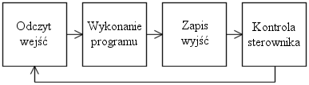

|
Strona tytu³owa
Opis rozkazów
Styki
Cewki
Liczniki
Timery
Operacje arytmetyczne
Relacje
Opis lekcji
Lekcja 1 Wprowadzenie
|
Kliknij tutaj aby wróciæ do poprzedniego etapu.
Lekcja 1Zasada dzia³ania i organizacja pamiêciKa¿dy sterownik PLC pracuje w kilkuetapowym cyklu. W najogólniejszym przypadku praca sterownika wygl¹da tak: 
Pierwszy etap ka¿dego cyklu to odczytywanie stanów wszystkich wejœæ sterownika i zapisywanie tych¿e do wewnêtrznej pamiêci sterownika. W rzeczywistych sterownikach czas trwania ka¿dego z cykli jest zmienny i zale¿y m. in. od d³ugoœci programu. W sterowniku symulowanym w tym programie dydaktycznym, ka¿dy cykl pracy trwa dok³adnie 10 ms. Oznacza to, ¿e w ci¹gu sekundy pracy symulacji, program u¿ytkownika wykonywany jest 100 razy. Z etapowego sposobu dzia³ania sterownika wynika, ¿e gdy w programie u¿ytkownika któreœ z wyjœæ modyfikowane jest kilka razy w jednym cyklu, to tak naprawdê na wyjœciu sterownika pojawi siê ostatnia zapisana wartoœæ. Podobnie czytanie kilka razy z tego samego wejœcia ta zawsze t¹ sam¹ wartoœæ. W programach dla sterowników PLC pojawia siê kilka typów pamiêci. Oto one:
Dla wygody u¿ytkowników mo¿na zamiast adresu u¿yæ wczeœniej zdefiniowanych s³ów. Jeœli np. pod trzecie wyjœcie cyfrowe sterownika (adres %Q0003) mamy pod³¹czon¹ ¿arówkê, to zamiast wszêdzie w programie, gdzie chcemy zapaliæ lub zgasiæ ¿arówkê pisaæ %Q0003, mo¿emy napisaæ po prostu ¯ARÓWKA. Dok³adnie tak samo zrobiliœmy w naszym pierwszym programie. Zamiast pamiêtaæ, ¿e pierwszy z lewej prze³¹cznik ma adres %I0000, u¿yliœmy s³owa BISTAB_1 (pierwszy bistabliny). Tak samo zamiast %Q0000, podaliœmy ¯Ó£TA_1 (pierwsza ¿ó³ta ¿arówka). Dziêki takim s³ownym zast¹pieniom wygdniej pisze siê programy, a tak¿e ³atwiej zanalizowaæ ich dzia³anie.
Prawdopodobnie pamiêtasz takie okno: |